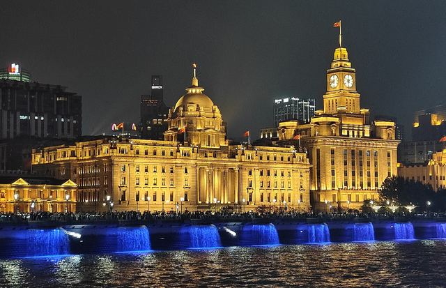

Waterfront promenade at dusk and skyline view · Huangpu
The Bund at dusk 外滩（中山东一路）
Be there by 16:30 for sunset at about 16:50, then stay as the lights come on. Free, no gate.
CheckedLights 18:00 to 22:00Amap (opens Amap, or its website, in a new tab)